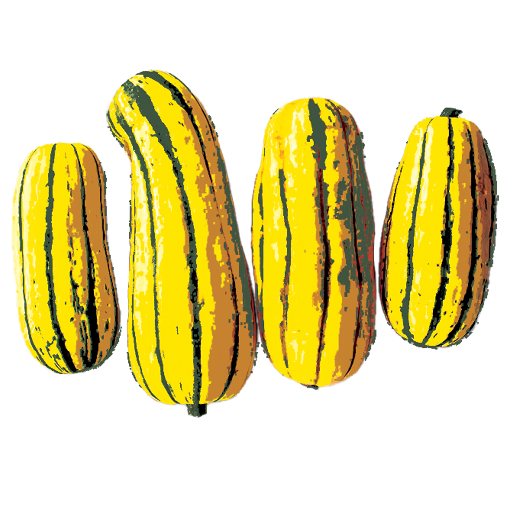
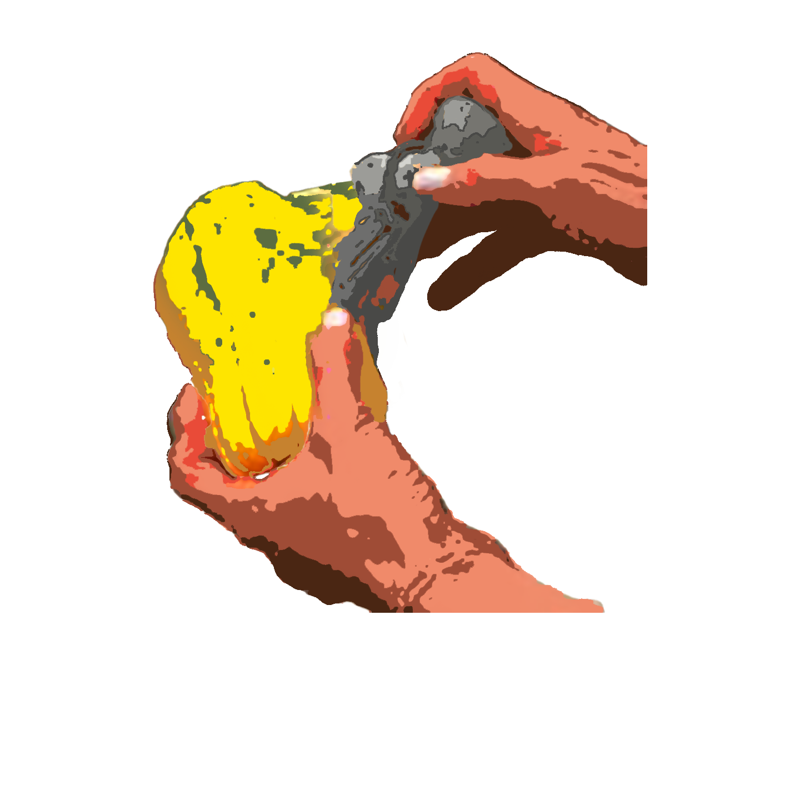
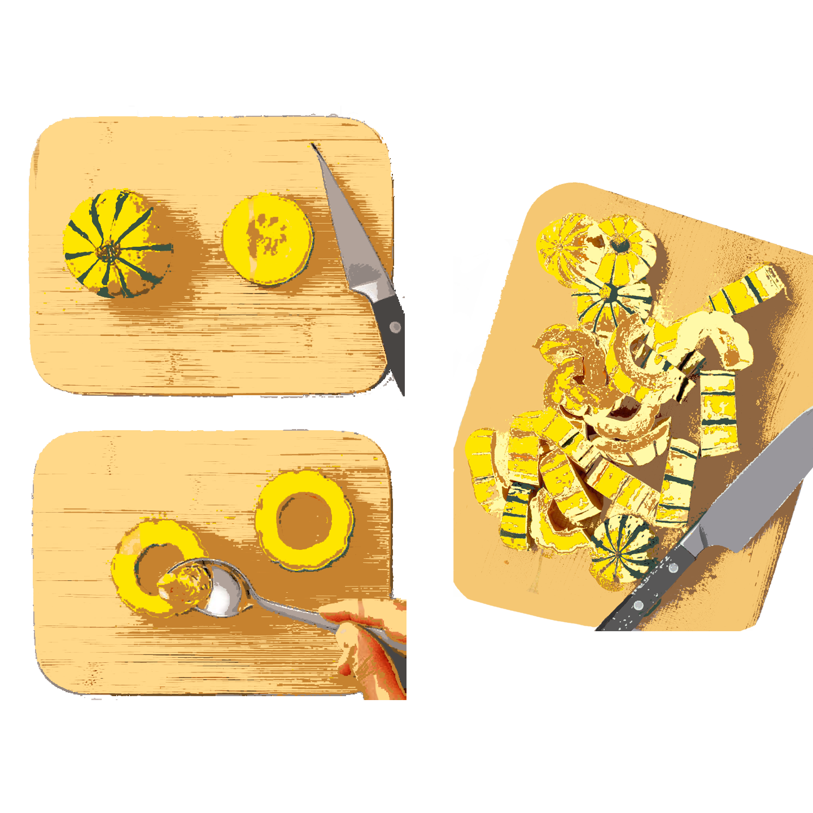
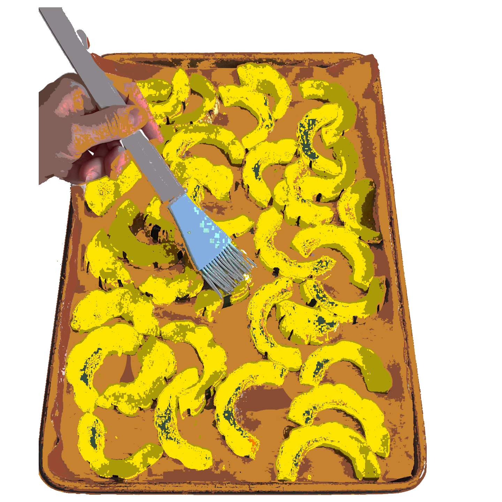
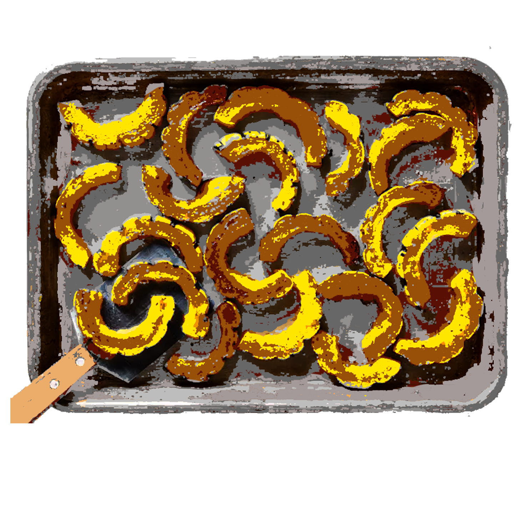
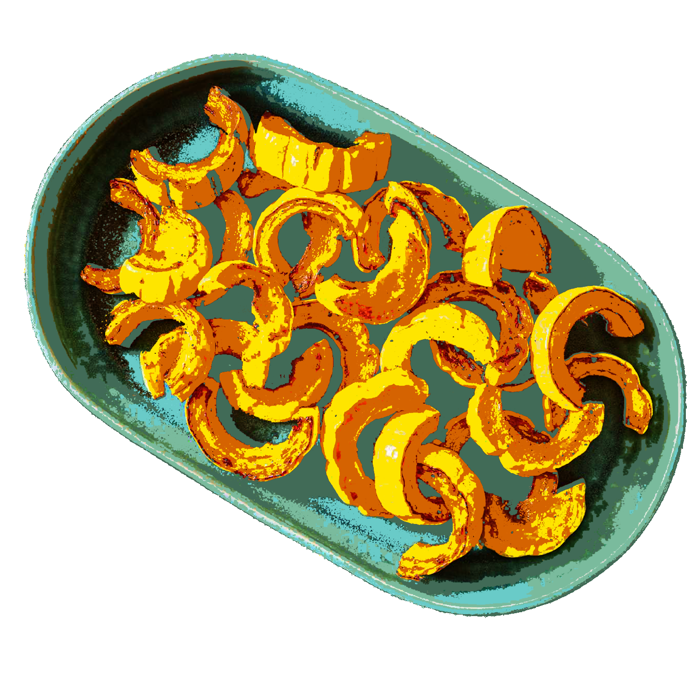

Roasted Squash with Red Onion & Pears
Compiled by Charlotte Newhouse

A delicious & healthy side dish recipe to compliment entrees such as brisket, roasted chicken etc. This recipe is vegan, gluten free, & dairy free, and kosher.
Prep time: 1 hour.
Equipment
knife, spoon
bowl
baking sheet
parchment paper
Ingredients (8 servings)
- 2 large delicata squash (about 1 lb/500 g each)
- 1 large red onion, halved and sliced
- 4 firm ripe pears (e.g., Bosc), cored, cut into wedges
(do not peel)
- 2 Tbsp olive oil
- 3 Tbsp brown sugar or honey
Spices
- 1 tsp sweet paprika
- kosher salt
- freshly ground black pepper
Method
Preheat oven to 425°F. Line a rimmed baking sheet with parchment paper.
Wash and brush squash to prep for cooking

Cut squash in half lengthwise and scoop out the seeds. Cut squash crosswise into ¼-inch slices to form half moons.


After combining squash with onion and pears Spread mixture in a single layer on prepared baking sheet.
Brush with mixture of olive oil, brown sugar, paprika, salt, and pepper. Measure according to liking.

Roast, uncovered, for about 30-35 minutes.

Then, transfer to a serving platter. Serve hot or at room temperature.
(Leftovers can be stored in fridge and reheated)

Enjoy!
Questions:
Link to Research Evaluations
Three links to recipe websites I have found, with a short (2-3 sentences) written review/critique for each, explaining what makes this site a good reference
- NYT Cooking - This website has a lot going on, but it definitely does it’s job. I’d describe it as more maximalist than minimalist because of all of the large photos and tight text, but it does exactly what a recipe website should do: has hundreds of recipes for possibly any occasion. It reminds me a little of a blog, which is not inherently bad, but it’s New York Times so it should probably be a little less ‘in your face’
- Pinch of Yum - I like how this website’s homepage is organized with the 4 photos representing trending items/sections that you can click on. The small circle photos at the bottom to help you narrow down your search are also helpful and since they are small, they aren’t so overwhelming. It does have a lot going on but not as much as NYT cooking.
- Love and Lemons - This website is the most minimalist of the 3 that I chose and I personally find it the least overstimulating to navigate on its home page. There is a lot of space between captions and photos, allowing for an easy read.
Three links to non-recipe websites with stylistic or communication techniques that might inform my own design, also with a short written rationale
-
Hello Monday - Something I liked about this website was that when scrolling, some aspects of the website stayed in place on the screen. I’d love to incorporate something like that into my website, possibly with images (I want to make my own illustration!)
-
Nike - What I like about the Nike website that I want to incorporate is the balance between maximalism and minimalism. As you scroll, there are a lot of photos without space in between, but then it becomes minimalist which is a nice break.
-
Oat Haus - With this website, Oat Haus, I love their colors, logo, and brand presence on the website. I like that they used their custom font throughout the website and made it bright, colorful, and fun. I would like to do this as well. I am influenced by their soft bubble letter font and the fact that there are no harsh edges.